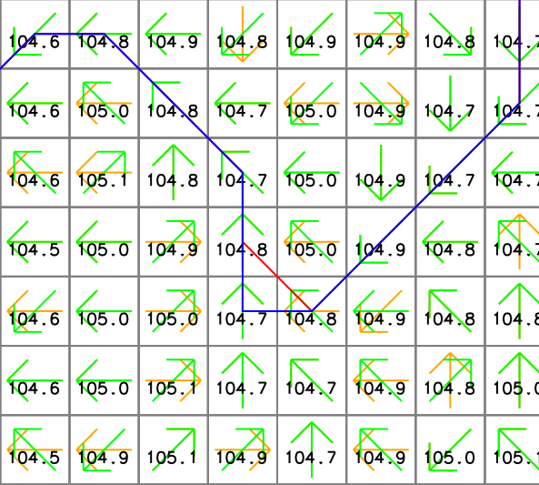

With -n flag, the module will count the number of upstream cells plus one and convert it to the negative if any upstream cells are likely to receive flow from outside the computational region (flow direction edges). Negative values identify cells with likely underestimates because not all upstream cells were accounted for. Since raster map weight may contain negative flow weights, -n flag is not compatible with weight option. Running the module twice with and without -n flag and weight option may be useful in this specific case.
The module recognizes two different formats of the flow direction map:
Direction encoding for neighbors of x
135 90 45 3 2 1
180 x 360 4 x 8
225 270 315 5 6 7
degrees 45 degrees
CCW from East CCW from East
(r.watershed drainage)
Calculate flow accumulation using r.watershed and r.accumulate:
# set computational region g.region raster=elevation -p # calculate positive flow accumulation and drainage directions using r.watershed r.watershed elevation=elevation accumulation=flow_accum drainage=drain_directions -s -a # calculate flow accumulation using r.accumulate r.accumulate direction=drain_directions accumulation=flow_accum_new # copy color table r.colors map=flow_accum_new raster=flow_accum # check difference betwen flow_accum and flow_accum_new r.mapcalc expression="accum_diff=if(flow_accum-flow_accum_new, flow_accum-flow_accum_new, null())"

For some reaon, there are slight differences between the two output maps.
The yellow and purple cells show the difference raster map (accum_diff). The red arrows and numbers represent drainage directions (drain_directions) and flow accumulation (flow_accum from r.watershed), respectively. Note that some cells close to headwater cells are assigned 1 even if they are located downstream of other cells.

For comparison, these numbers show the new flow accumulatoin (flow_accum_new from r.accumulate). The same cells are properly accumulated from the headwater cells.
Calculate flow accumulation and delineate stream networks at once:
# use r.accumulate to create flow_accum_new and streams_new at once r.accumulate direction=drain_directions accumulation=flow_accum_new threshold=50000 stream=streams_new # or delineate stream networks only without creating an accumulation map r.accumulate direction=drain_directions threshold=50000 stream=streams_new_only # use r.stream.extract, elevation, and flow_accum_new to delineate stream networks r.stream.extract elevation=elevation accumulation=flow_accum_new threshold=50000 stream_vector=streams direction=drain_directions_2
In this example, r.accumulate and r.stream.extract produced slightly different stream networks where the flow turns 90 degrees or there are multiple downstream cells with the same elevation. The following figure shows an example where the streams (red from r.stream.extract) and streams_new (blue from r.accumulate) vector maps present different stream paths. The numbers show cell elevations (elevation map), and the yellow (drain_directions map) and green (drain_directions_2 map) arrows represent flow directions generated by r.watershed with -s flag and r.stream.extract, respectively. Note that the two flow direction maps are different.

Last changed: $Date$